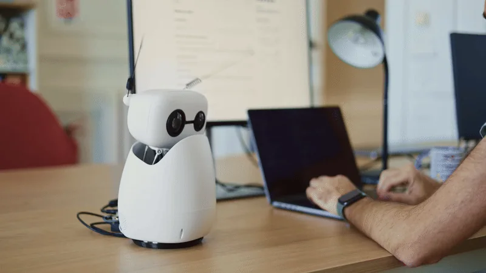
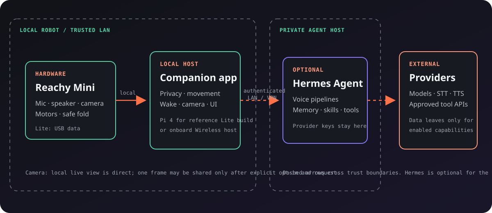
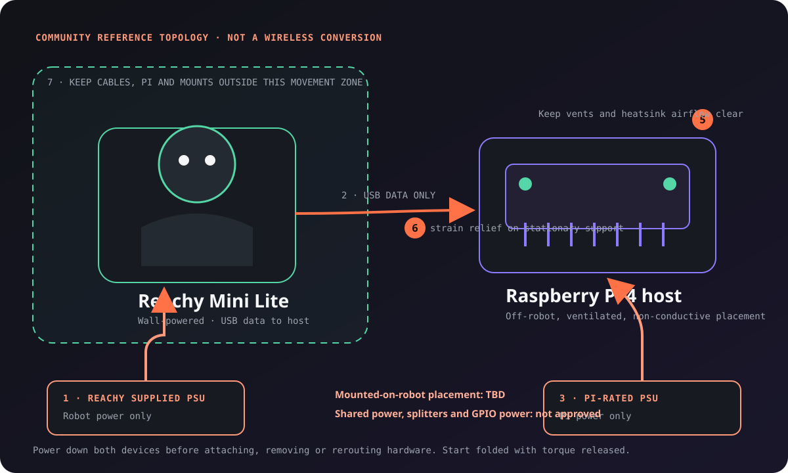
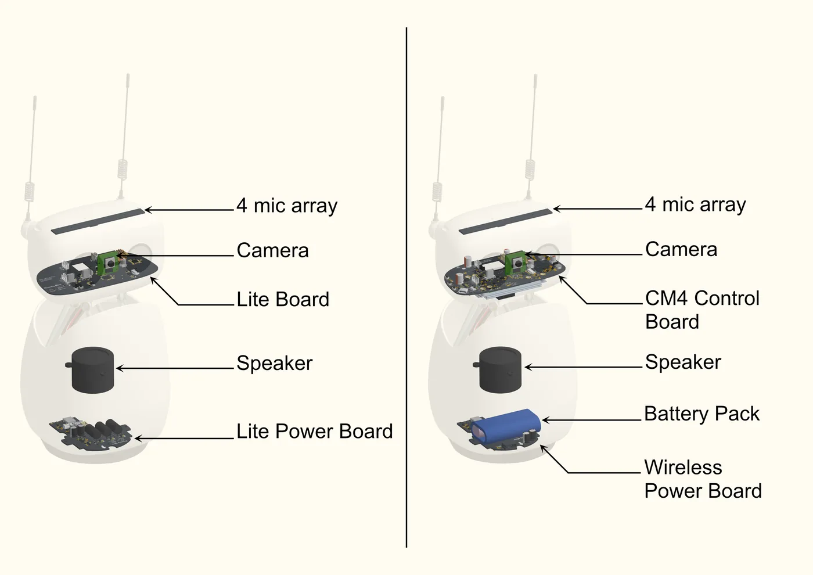
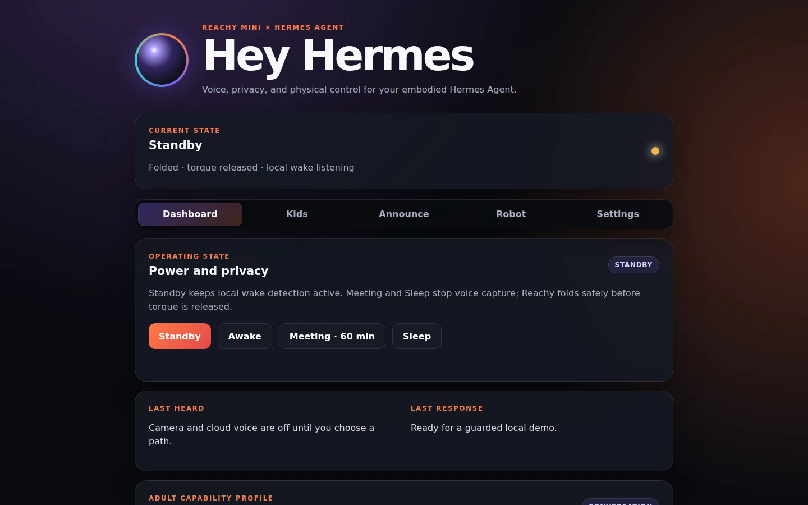
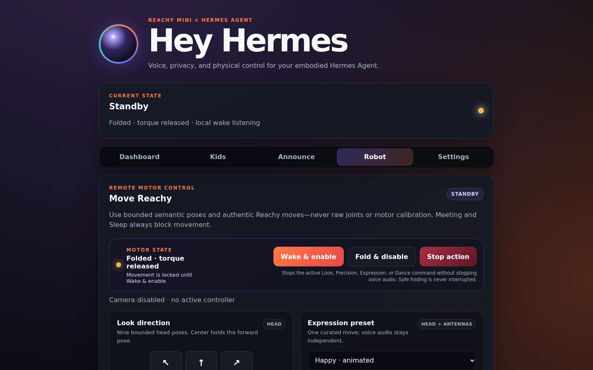
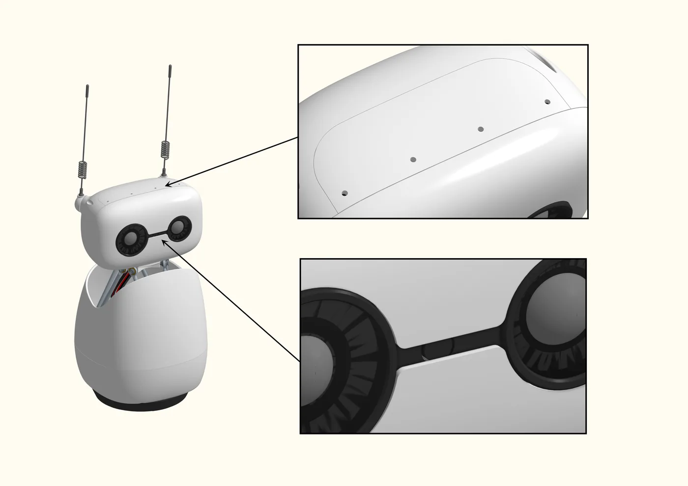

01 / CONNECT
Bring Reachy and an app host
Use Wireless, a Lite connected to a normal computer, or Tim's community Lite + Pi 4 reference pattern. The Pi pattern is not an official Wireless conversion.
AN EXTENSIBLE REACHY MINI COMPANION
Start with visible privacy states, guarded movement, camera controls, announcements and a local browser UI. Add Hermes Agent for voice, memory, skills and progressively gated tools. Hermes is central to the advanced experience—not required to understand the app.

01 / CONNECT
Use Wireless, a Lite connected to a normal computer, or Tim's community Lite + Pi 4 reference pattern. The Pi pattern is not an official Wireless conversion.
02 / CHECK SAFETY
Confirm Standby and released torque, wake with clear space, try one bounded look, press Stop, then verify safe fold before enabling camera or voice.
03 / EXPAND
The authenticated private bridge adds speech providers, interruptible conversation, memory, Kids experiences and gated agent tools while provider keys stay off Reachy.
VERIFIED VS GATED
✅ means reference-tested. ◐ means implemented but still requires per-install or final hardware acceptance. Experimental features are not presented as production-ready.
| Capability | Reachy + app | Lite + Pi 4 | Hermes | Boundary |
|---|---|---|---|---|
| Local dashboard, privacy and guarded movement | ✅ | ✅ | Optional | Physical acceptance still required |
| Local live camera | ✅ | ✅ | Optional | Explicit opt-in; trusted UI only |
| Voice, announcements and one-frame model vision | — | — | ◐ | Private bridge + configured providers |
| Supervised Kids Mode and personal agent tools | — | — | ◐ | Adult supervision; progressively gated |
| Sony Bluetooth controller | — | — | Optional | Wireless only; final hardware acceptance pending |
TRUST BOUNDARIES
The app host owns local wake, safety, privacy, movement and camera controls. The optional Hermes host keeps identity, memory, tools and provider credentials. Dashed paths cross into private or external systems.

Text summary: Reachy hardware connects to the local companion app, which owns safety, privacy, movement, wake, camera and UI controls. An optional authenticated LAN or VPN bridge connects the app to a private Hermes host. Only enabled capabilities cross from Hermes to external model, speech or approved tool providers.
PHYSICAL STATES
Face tracking and wake-direction sensing stay local to Reachy. Explicit voice commands can select Standby, Awake, timed Meeting, or Sleep. Meeting and Sleep stop microphone capture and tracking, cancel physical actions, clear playback, and disable wake detection. Before any transition releases motor torque, Reachy checks its pose and folds the head gently when needed. Sleep requires the settings UI or a physical control to wake again.
HARDWARE, SAFETY, PRIVACY
Official Reachy Mini imagery explains the real hardware. The project-authored Pi diagram shows the conservative community topology—not a final attached mount and not Wireless equivalence.

Text summary: Keep the Pi off-robot on a ventilated, non-conductive surface. Power Reachy and the Pi from separate approved supplies, connect USB for data only, secure cable strain relief to a stationary support, and keep every cable, mount and device outside Reachy's movement zone. Shared power and robot-mounted placement are not approved.




OPEN SOURCE · EARLY ALPHA
Baseline local evaluation needs Reachy Mini SDK 1.9+, Python 3.11+, supported Reachy hardware and a trusted local network. Hermes and provider access are required only for the connected voice, Kids, vision and agent paths.
$ git clone https://github.com/Timverhoogt/reachy-mini-hermes $ cd reachy-mini-hermes $ uv build --wheel $ uv pip install --reinstall dist/reachy_mini_hermes-*.whl # Then open Reachy’s app settings and say any local wake phrase: “Hey Hermes” · “Okay Nabu” · “Hey Reachy”